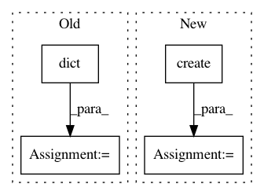

caa5ccc42c3d7e0004688a91e9e4a5b42b1a8957,test/test_documentation.py,TestDocumentation,test_readme,#TestDocumentation#,158
Before Change
agent = Agent.create(
agent="tensorforce",
states=dict(type="float", shape=(10,)),
actions=dict(type="int", num_values=5),
max_episode_timesteps=100,
memory=10000,
update=dict(unit="timesteps", batch_size=64),
optimizer=dict(type="adam", learning_rate=3e-4),
policy=dict(network="auto"),
objective="policy_gradient",
reward_estimation=dict(horizon=20)
)
// Retrieve the latest (observable) environment state
state = get_current_state() // (float array of shape [10])
// Query the agent for its action decision
action = agent.act(states=state) // (scalar between 0 and 4)
// Execute the decision and retrieve the current performance score
reward = execute_decision(action) // (any scalar float)
After Change
from tensorforce import Agent, Environment
// Pre-defined or custom environment
environment = Environment.create(
environment="gym", level="CartPole", max_episode_timesteps=500
)
// Instantiate a Tensorforce agent
agent = Agent.create(
agent="tensorforce",
environment=environment, // alternatively: states, actions, (max_episode_timesteps)
memory=1000,
update=dict(unit="timesteps", batch_size=64),
optimizer=dict(type="adam", learning_rate=3e-4),
policy=dict(network="auto"),
objective="policy_gradient",
reward_estimation=dict(horizon=20)
)
// Train for 300 episodes
for _ in range(1):
// Initialize episode
states = environment.reset()
terminal = False
while not terminal:
// Episode timestep
actions = agent.act(states=states)
states, terminal, reward = environment.execute(actions=actions)
agent.observe(terminal=terminal, reward=reward)
agent.close()
environment.close()
In pattern: SUPERPATTERN
Frequency: 3
Non-data size: 4
Instances
Project Name: reinforceio/tensorforce
Commit Name: caa5ccc42c3d7e0004688a91e9e4a5b42b1a8957
Time: 2020-02-11
Author: alexkuhnle@t-online.de
File Name: test/test_documentation.py
Class Name: TestDocumentation
Method Name: test_readme
Project Name: bokeh/bokeh
Commit Name: 48645ae805994e34949f4c2cfab38c1ab27d2cd4
Time: 2017-09-18
Author: bryanv@anaconda.com
File Name: bokeh/io/notebook.py
Class Name:
Method Name: push_notebook
Project Name: reinforceio/tensorforce
Commit Name: f812a698569f43889775b6119e16564c4af41676
Time: 2020-02-15
Author: alexkuhnle@t-online.de
File Name: tensorforce/execution/runner.py
Class Name: Runner
Method Name: __init__